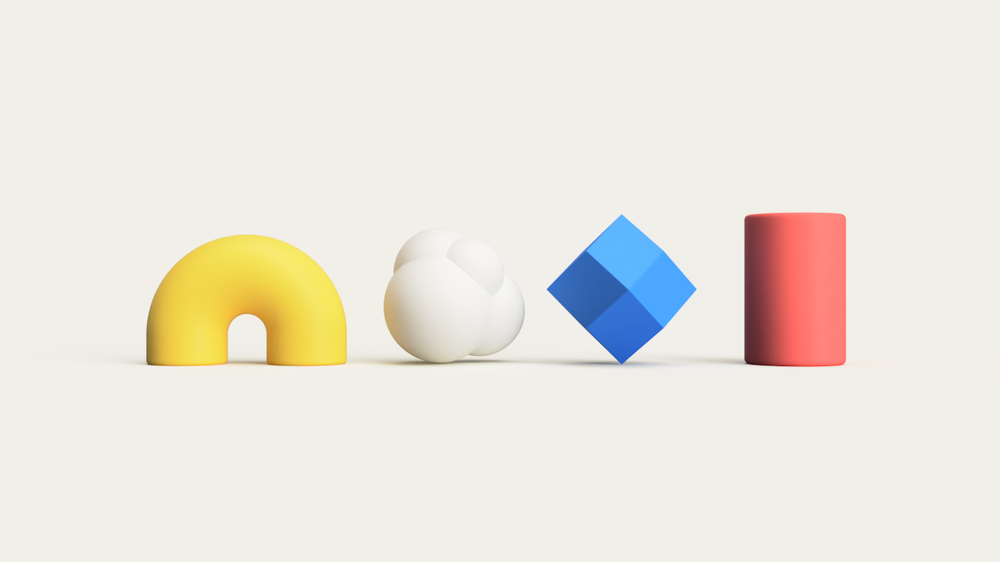
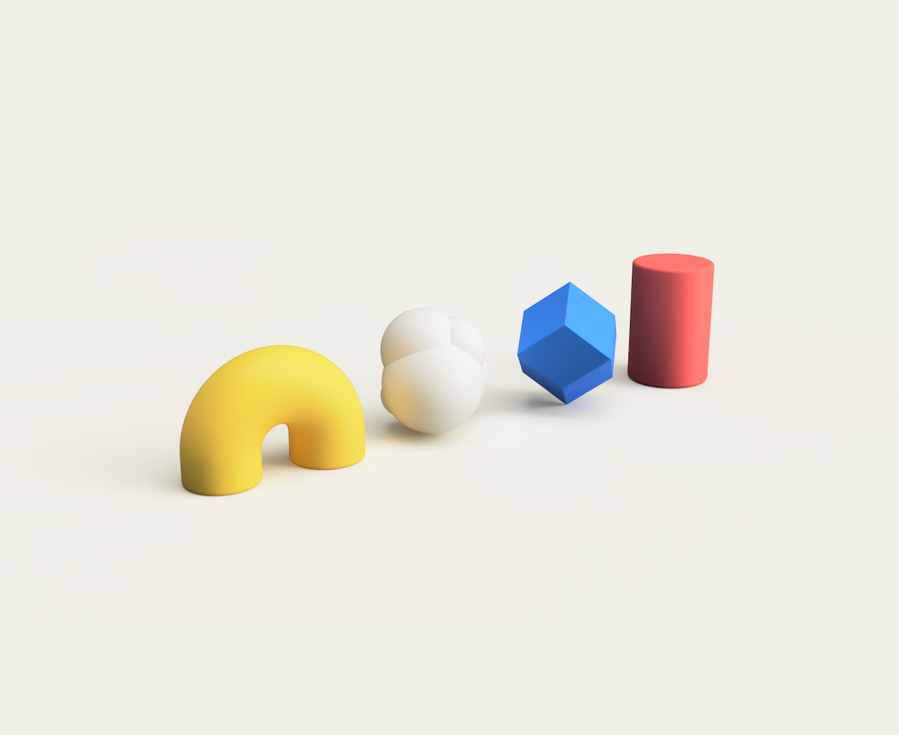
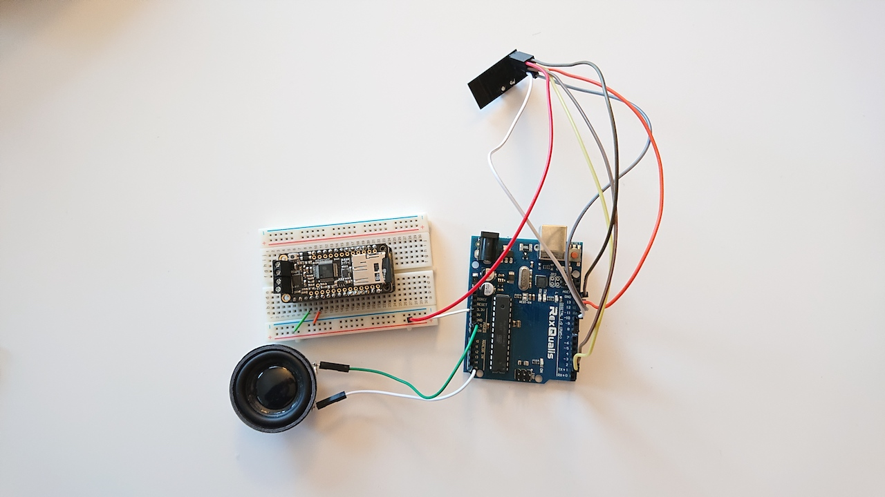
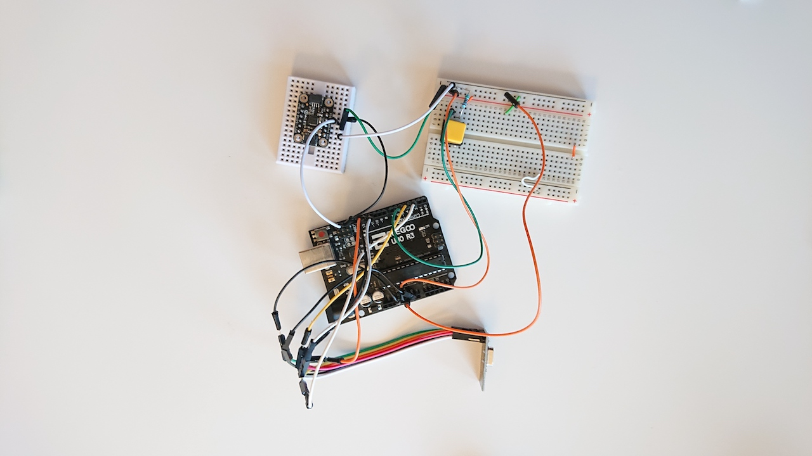

Sound Blocks – Jason Pi
Playing blocks that immerse users with sound and touch. The blocks communicate with one another in a generative and interactive way (still figuring out what this is).
 With a MPU6050 accelerometer/gyro, Arduino Uno, and NRF24 transceiver. Sends the x-axis acceleration over to the receiving end, which maps that as an output tone played on the speaker.
Sending side
Receiving side
